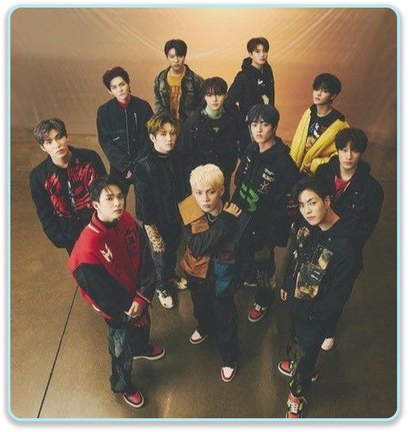
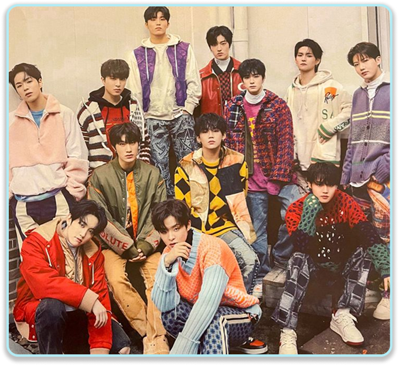

THE SECOND STEP:
CHAPTER ONE
Songs:
- JIKJIN
- U
- DARARI
- IT'S OKAY
The Second Step: Chapter One is their first for the second step series. This album also the last album to feature Yedam and Mashiho as they left the group in November 2022. After a year-long hiatus following their debut "First Step" series, this era marked a significant shift in the group's sound, moving from high-energy "boy crush" vibes to a more polished, versatile pop aesthetic. On January 11, 2022, YG Entertainment released the teaser video announcing comeback date to be February 15. On February 24, the band received their first-ever music show win through the cable network program, Show Champion, and the single “Jikjin”.
This album consists of four tracks which is JIKJIN, U, DARARI, and IT'S OKAY. Their title track “Jikjin” which literally translates to "go straight" or "straight ahead" is a quintessential YG-style hip-hop dance track. This "Jikjin" music video is one of the most visually expensive productions in the group’s history.
Their b-side track of this album "DARARI" became almost as big than the title track because of the viral dance challenge propelled the group to a much wider global audience. This song was composed and written by Bang Yedam who is the former member of Treasure while the rap lyrics was fully written by Choi Hyunsuk, Yoshi and Haruto.
Next, “U" is the second track on the album and serves as a stylish, sophisticated contrast to the intensity of "JIKJIN”. The song emphasizes that "it has to be U"—expressing a singular focus on a crush with a catchy, repetitive hook. Another their song of this album is "IT'S OKAY" a soulful R&B Ballad. The lyrics provide comfort to those feeling exhausted or lost. It carries a message of "Even if the world turns its back on you, I'll be by your side". And again, the rapper members Choi Hyunsuk, Yoshi, and Haruto participated in the songwriting, ensuring the message felt personal from the group to their fans (Treasure Makers).
PHOTOS

